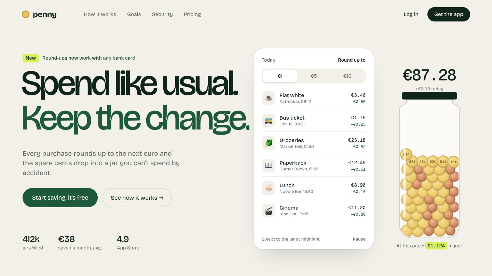
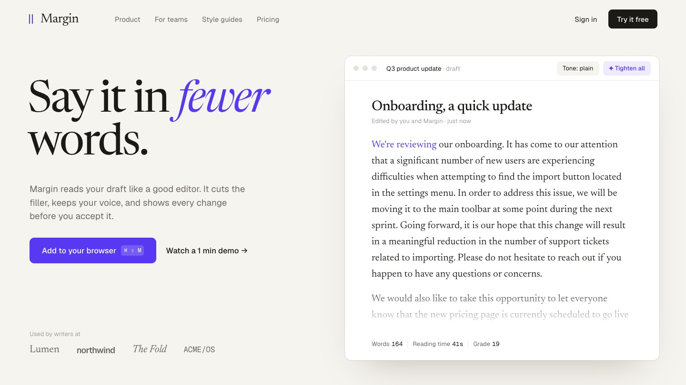
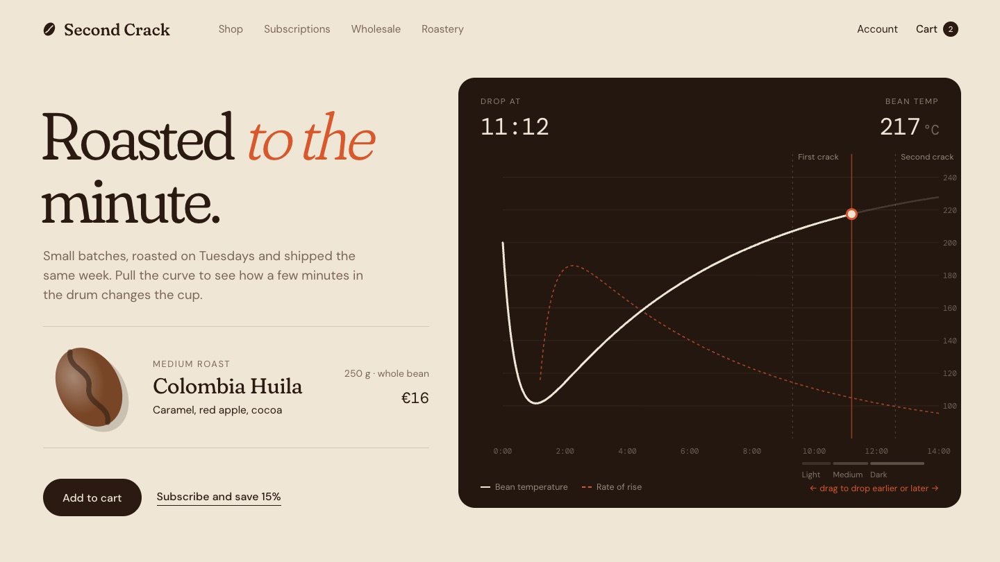
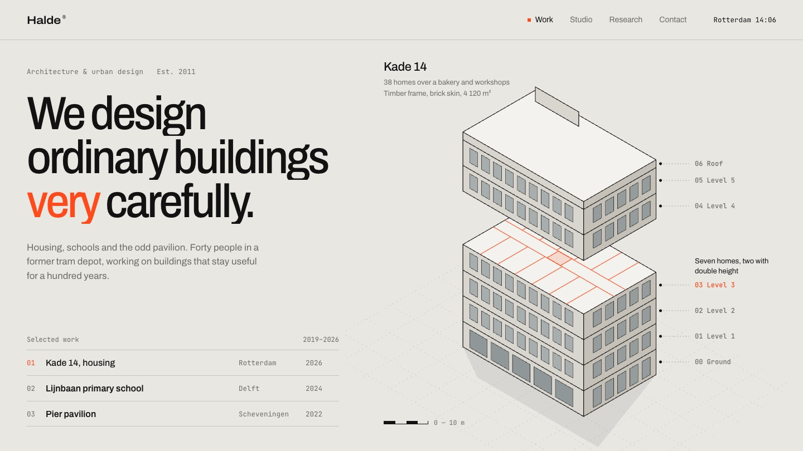
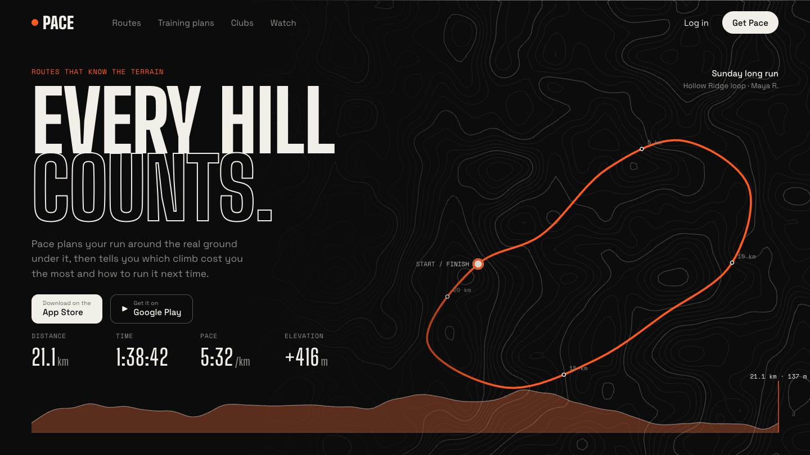
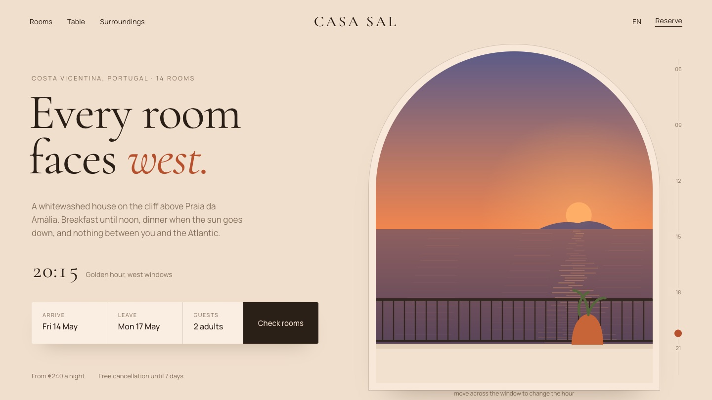
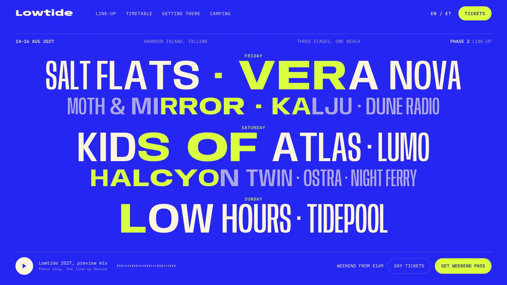
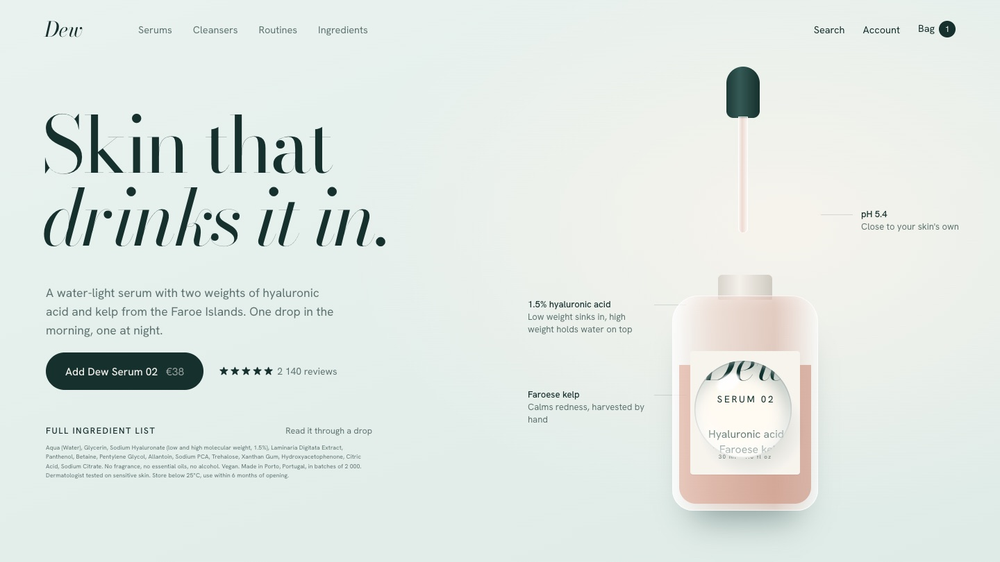

01Spare change from each purchase flies into a glass jar as coins. Switch round-up between €1, €5 and €10 and the jar refills.

02A bloated product update. Click any sentence and the filler gets struck out and folds away, the word count drops.

03The roast curve draws itself while the bean darkens. Drag along the curve to drop earlier or later, and the coffee, notes and bean change.

04An axonometric building drops in floor by floor. Hover a floor and everything above lifts to show its plan.

05Contour lines rise, a half-marathon route draws over them with live stats. Scrub the elevation profile or the map to replay the run.

06An arched window onto the Atlantic runs from dawn to golden hour. Move across the window to change the hour, the page tints with it.

07The line-up is set in a variable font. Letters near the cursor swell, and with the preview playing they pump to the beat.

08A drop falls from the pipette and becomes the cursor, a water lens that magnifies the page. Click to leave drops that slowly dry.